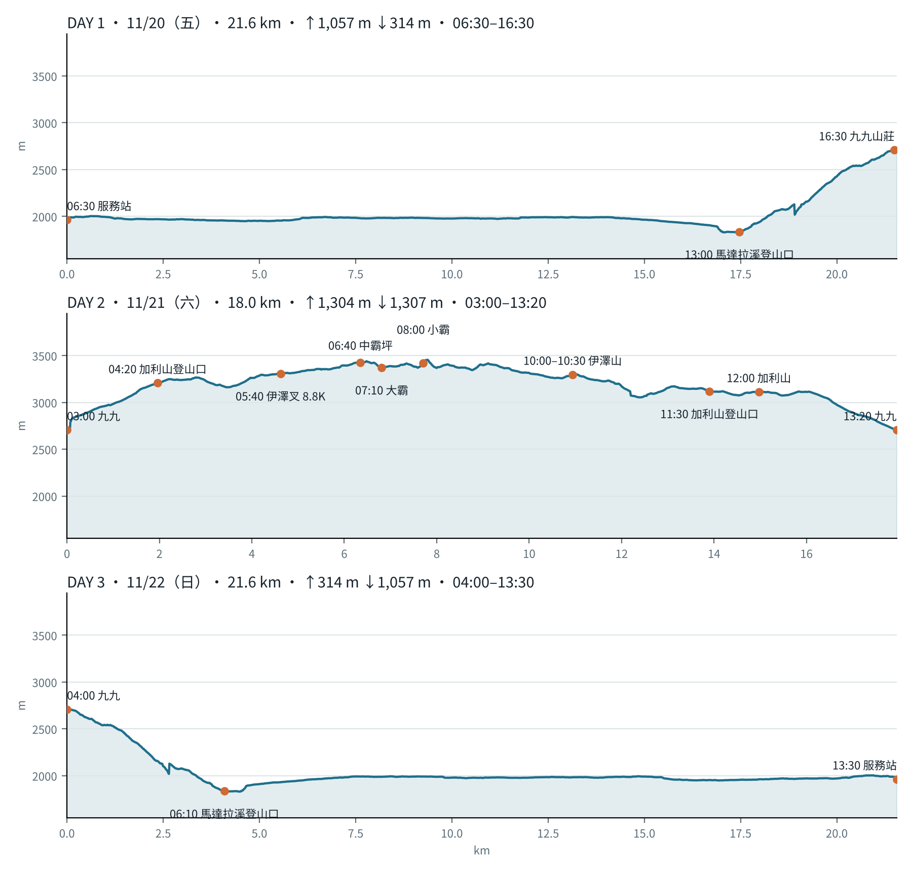

DABAJIAN · XIAOBAJIAN · YIZE · JIALI
大小霸 3 天 2 夜
九九山莊二泊 · 11/20（五）– 11/22（日） · 大鹿林道東線進出 · 4 座百岳
D1 走大鹿林道東線 19 km 到馬達拉溪登山口，再陡上 4 km 進駐九九山莊；D2 摸黑出發，經加利山登山口、伊澤山叉路、中霸坪到大霸霸基與小霸，回程順收伊澤山、加利山；D3 原路下山約 23 km。協作提供 D1 晚餐、D2 早晚餐、D3 早餐。先看 00 與 01 的「時間檢核」。
00行前必確認
確認
入園證與入山證：雪霸國家公園入園證（日期 11/20–11/22）、九九山莊床位是否核准、隊員名單實名。列印紙本 + 身分證。
九九山莊施工中：2026 年 3 月底起分期整建至 2028 年底，床位減為 70 床，報到與住宿動線依管理員指示。
協作（布農卡里布灣）：九九山莊包餐晚早餐，兩晚共 4 餐。匯款期限最晚 11/14（六）23:59，逾期自動取消訂餐；全額退費取消期限 11/16（一）23:59。詳見 06。
飲水：颱風後雪管處曾公告九九山莊供水不穩、請自備用水。出發前問協作或山莊最新狀況。
背包：Garwhar Pack 20（20L）裝三天衣物 + 睡袋偏緊，先試裝；裝不下考慮借 30–40L 或請協作背睡袋。
天氣：11/15 最新預報（出發前一晚再看一次）
11/18（三）起較強東北季風南下並有鋒面通過，11/19–20 最冷，平地低溫約 12–16°C，比 11/10 那波略低。11/10 那波玉山最低 1.1°C，這波玉山可能降到 0°C 上下。
D1 11/20（五）：最濕冷的一天。中北部可能轉陰雨，林道全程淋雨的機會不低；換算九九山莊夜間約 5–7°C。雨衣雨褲穿好、抵達立刻換乾衣。
D2 11/21（六）：東北季風減弱、轉晴穩定，午後山區零星陣雨。前一天濕、當晚轉晴，最容易讓濕的岩面在清晨結霜或薄冰；換算霸基清晨約 0–3°C，稜線強風體感低於 0°C。
D3 11/22（日）：天氣穩定。
11/18–19 查中央氣象署「育樂天氣 → 登山 → 大霸尖山」，若 11/21 清晨最低溫 ≤ 0°C，帶鏈式冰爪；同時向協作確認霸基是否結冰。
| 路線 | 大霸尖山登山服務站（觀霧）→ 大鹿林道東線 19 km → 馬達拉溪登山口 → 九九山莊；D2 九九 → 加利山登山口 → 伊澤山叉路（8.8K）→ 中霸坪（10.4K）→ 大霸霸基 → 小霸尖山，回程伊澤山、加利山；D3 原路下山 |
| 入園文件 | 入園許可證列印 + 身分證／健保卡隨身 |
| 登山口登記 | 大霸尖山登山服務站（大鹿林道東線 0.3K）辦理登記；林道禁止汽機車，只能步行 |
| 廁所 | 登山口、林道 4.8K、10K、九九山莊 |
| 住宿 | 九九山莊（約 2,700 m），施工期間床位 70 床 |
01詳細行程
每日海拔剖面（與本行程相同走法的 GPX）

剖面取自健行筆記分享的大霸三日 GPX（2021/05），D2 走法與本行程相同（加利山從叉路往返）。D2 海拔以九九、小霸、伊澤、加利山三角點校正，D3 為 D1 原路反向。地點與時間依本行程；該紀錄林道走 17K 捷徑，比上河 19K 約少 1.5 km。
DAY 1 · 11/20（五）林道長征進駐九九
| 時間 | 地點 | 備註 |
|---|---|---|
| 02:20 | 板橋車站 集合 | 02:30 出發，03:00 中壢接駁。車上補眠，早餐自備在車上吃。 |
| 06:00 | 大霸尖山登山服務站 | 登記、上廁所、整裝。頭燈放背包頂袋，傍晚可能用到。 |
| 06:30 | 服務站 出發 | 林道大致平緩緩下，配速穩定、每小時休息 5–10 分。4.8K、10K 有廁所；15K、19K 有熊出沒告示與熊鈴借用。午餐在林道上吃。 |
| 13:00 | 馬達拉溪登山口 | 上河抵達時間約 13:10。補水、吃點東西，準備最累的一段。 |
| 13:00 | 陡上九九山莊 | 林道走完再陡上，放慢配速，不要跟快的隊員拚。 |
| 16:30 | 九九山莊（宿） | 上河純步程約 16:40；加上休息實際可能 17:00 後。11/20 日落約 17:05，天黑前沒到就打開頭燈。報到、換乾衣服。 |
| 17:00 | 協作晚餐 | 若預計晚到，先跟協作說留餐。飯後整理 D2 攻頂包、早睡。 |
DAY 2 · 11/21（六）大小霸 + 伊澤 + 加利
| 時間 | 地點 | 備註 |
|---|---|---|
| 02:30 | 協作早餐 | 02:00 起床，早餐後只有 30 分鐘準備，前一晚把攻頂包、頭燈、保暖層都放好。 |
| 03:00 | 九九山莊 出發（頭燈） | 輕裝出發。日出約 06:15，前 3 小時摸黑。 |
| 04:20 | 加利山登山口（3050 高地附近） | 加利山留到回程再上。 |
| 05:40 | 伊澤山叉路 8.8K | 伊澤山也留到回程。 |
| 06:40 | 中霸坪（五百元鈔視角） | 清晨光線最好，拍照控制在 10 分鐘內。 |
| 07:10 | 大霸霸基 | 大霸本體禁止攀登，只到霸基。霸基前段岩階風很大，一到就加保暖層。 |
| 08:00 | 小霸尖山 ▲ | 沿大霸山壁腰繞要快速通過、不停留（落石）。登頂前約 200 m 很陡、手腳並用，背包可留在下方。 |
| 08:40 | 回大霸霸基 | |
| 09:10 | 回中霸坪 | 這裡容易比預定晚 15–20 分。 |
| 10:00 | 伊澤山叉路 8.8K | |
| 10:30 | 伊澤山 ▲ → 伊澤山登山口 | 中午前後常起霧，視野不好也照樣拍照下撤。 |
| 11:30 | 加利山登山口 | 這段你的規劃多抓了 20 分，可吸收前面延誤。 |
| 12:30 | 加利山 ▲ 往返 | 若 12:30 後才到登山口，或已起霧下雨，可考慮放棄加利山。 |
| 13:20 | 回到九九山莊 | 實際含休息約 14:00。換衣、補水、午睡。 |
| 17:30 | 協作晚餐 | 收好 D3 的行李，頭燈放外面。 |
DAY 3 · 11/22（日）下山
| 時間 | 地點 | 備註 |
|---|---|---|
| 02:30 | 協作早餐 | 早餐後到出發有 1.5 小時，可以慢慢收行李。 |
| 04:00 | 九九山莊 出發 | 陡下用登山杖護膝，摸黑注意腳步。 |
| 06:10 | 馬達拉溪登山口 | 補水、吃東西。 |
| 06:10 | 林道 19 km | 回程林道是緩上坡，比去程慢 30 分。累積疲勞最重的一段，每小時固定休息。 |
| 13:30 | 大霸尖山登山服務站 | 離山登記、熊鈴歸還。 |
| 15:00 | 慶功宴 | 實際下山可能 14:00 後，15:00 偏緊，建議改 16:00 或先確認餐廳位置。 |
| 19:30 | 板橋車站 解散 | 慶功宴延後的話，抵達約 20:00。 |
標高、距離、日出日落為概估；步程依上河 G04 步程示意圖。
時間檢核：你的安排 vs 上河
| 路段 | 你的安排 | 上河 | 差異 |
|---|---|---|---|
| D1 服務站 → 馬達拉溪登山口 | 6 h 30 | 6 h 40 | −10 分 |
| D1 馬達拉溪 → 九九山莊 | 3 h 30 | 3 h 30 | 0 |
| D2 九九 → 加利山登山口 → 8.8K → 中霸坪 | 3 h 40 | 3 h 40 | 0 |
| D2 中霸坪 → 霸基 → 小霸 → 霸基 → 中霸坪 | 2 h 30 | 2 h 50 | −20 分 |
| D2 中霸坪 → 伊澤山 → 加利山 → 九九 | 4 h 10 | 3 h 45 | +25 分 |
| D3 九九 → 馬達拉溪 → 服務站 | 9 h 30 | 9 h 20 | +10 分 |
結論：大致可行，但幾乎沒有休息緩衝
三天總時間都和上河純步程幾乎一樣，等於沒有預留午餐、拍照、排隊的時間。以奇萊南華的數據推估（見下方），你的含休息節奏大約等於上河，略快一點，所以上河是合理的基準，但緩衝不多。
D1：推估約 16:00 到九九，比上河早約半小時。頭燈仍放隨手處，若出發延誤就會摸黑。
D2：大小霸段少抓約 20 分，但回程伊澤、加利段多抓 25 分，可以互相抵銷。裸露地形無法靠速度追時間，建議設 09:00 離開霸基作為折返時間。
D3：回程林道緩上加上疲勞累積，照上河抓，約 13:30 回服務站。慶功宴 15:00 偏緊，建議延到 16:00。
中霸尖山：不在上河主線步程內，路況與時間都不明。除非領隊熟悉路線且 D2 進度超前，否則建議這次跳過。
用奇萊南華（10/10–10/11）的數據推估
以 Strava 的移動時間為主（Garmin 會把陡上的慢步算成停止，移動時間偏低）。
| 距離／爬升 | 約 41 km ｜ ↑ 2,176 m ｜ 最高 3,391 m |
| 移動時間 | 12 h 20（Strava）；Garmin 為 8 h 12，偏低不採用 |
| 停下來的時間 | 約 6 h（手錶記錄 18 h 18 − 移動 12 h 20），約佔 1/3，含天池早午餐、山頂等日出 |
| 緩坡移動配速 | 約 12–17 分/公里（3.5–5 km/h） |
| 心率 | 平均 113、最大 161 bpm，整趟低強度有氧，體能有餘裕 |
| 路段 | 上河 | 推估 | 說明 |
|---|---|---|---|
| D1 林道 19 km | 6 h 40 | 約 6 h 20 | 純移動約 4 h 45（4 km/h），一般休息約佔 1/4 |
| D1 馬達拉溪 → 九九 | 3 h 30 | 約 3 h | ↑ 約 950 m，陡上 |
| D2 大小霸＋伊澤＋加利 | 10 h 15 | 照上河 | 裸露、手腳並用地形，不靠速度追時間 |
| D3 九九 → 服務站 | 9 h 20 | 照上河 | 林道緩上 + 前兩天疲勞累積 |
可以省時間的地方：休息節奏
時間主要花在停下來，而不是走得慢。林道段每小時停 5–10 分鐘補水吃東西，午餐控制在 20 分鐘內，盡量不要坐太久。
推估以一次紀錄為基準，大小霸距離約為奇萊南華的 1.5 倍，D3 實際狀態依疲勞程度而定。
02九九山莊
海拔約 2,700 m，由數棟山屋組成。2026 年 3 月底起分期整建，第一階段龍門客棧一號、管理員室與原餐廳暫停使用，二號為住宿、三號為臨時餐廳與廚房，床位 70 床。
水：供水可能不穩，熱水要用耐熱容器
颱風後雪管處曾提醒供水系統未穩定、請自備用水。出發前確認現況；山莊水源建議煮沸或過濾再喝（2,000 m 以上滾 3 分鐘）。
保溫瓶或耐熱瓶才裝熱水，寶特瓶、軟水袋不耐滾水。
盥洗
山屋不能洗澡，帶濕紙巾、乾洗手。下山後慶功宴前換一套乾淨衣服。
山屋過夜小提醒
- 耳塞 + 眼罩：施工中床位密集，各隊凌晨陸續起床。
- 頭燈放枕頭邊；凌晨收東西避免塑膠袋聲音。
- 11 月夜間可能接近 0°C，睡覺穿刷毛 + 乾襪子，濾水器放睡袋內避免結冰。
- 食物收進背包或山屋內，林道至九九一帶有黑熊出沒紀錄；垃圾全部帶下山。
03配給：水・食物・衣物
以一人份估算。協作供應 D1 晚、D2 早晚、D3 早；自己準備 D1 早午、D2 行動糧、D3 午餐（慶功宴前）。
飲水
建議做法
D1 帶 1.5–2 L：林道長、補給點不確定，馬達拉溪陡上前要還有 0.7 L 以上。
D2 隨身 1.5 L + 保溫瓶熱水：霸基等待、休息時喝熱的很救命。
D3 下山前補滿 1.5 L：林道緩上很耗水。
冬天不覺得渴也要每 30–40 分喝幾口。
食物
| 品項 | 用途 | 數量 |
|---|---|---|
| D1 早餐（車上）：麵包／飯糰 | 1–2 個 | |
| D1 午餐：飯糰／三明治 | 林道上分兩次吃 | 2 個 |
| D3 午餐：麵包／飯糰 | 可前一天先買耐放的 | 1–2 個 |
| 能量果凍 | D2 攻頂與 D1、D3 林道 | 5–6 個 |
| 堅果 | 2–3 把 | |
| 巧克力 / 能量棒 | 6 條 | |
| 電解質 / 鹽糖 | 數顆 | |
| 熱飲包（可可、薑茶） | 搭配山莊熱水 | 2–3 包 |
再多帶一份備用糧
天候或傷病延誤時，能多撐一餐。
衣物
| 品項 | 用法 | 數量 |
|---|---|---|
| 化纖排汗衣（可含 mont-bell 短袖） | A：D1 林道（短袖可），晾乾 D3 再穿；B：D2 攻頂，建議長袖或短袖加袖套 | ×2 |
| 美麗諾長袖：SIMOND RESIST | 睡覺專用，只在山屋穿、保持乾燥；D2 起床後換下收好 | ×1 |
| 美麗諾緊身褲：FORCLAZ TREK 500 | 睡覺 + D2 攻頂穿在 MH100 AF 長褲內；回九九立刻翻面晾乾 | ×1 |
| 長褲：MH100 AF 可拆式彈性褲 | 全程 | ×1 |
| 中層保暖：MH100 刷毛 | 山莊、睡覺、D2 清晨 | ×1 |
| 保暖外套：PUFFTECH | 霸基、山莊晚上；清晨強風下搭配雨衣防風 | ×1 |
| 防水外層：mont-bell Storm Cruiser | 防風防雨，D2 清晨一定穿 | ×1 |
| 雨褲：MH500 | 起霧下雨、霸基擋風 | ×1 |
| 保暖毛帽 + 手套 + 脖圍 | D2 凌晨 | ×1 |
| 羊毛襪 | 白天行進穿同一雙 | ×1 |
| 基本款登山襪 | 備用；晚上一定換乾襪睡覺 | ×1 |
| 防水外層手套 | 搭配保暖手套，霸基清晨用 | ×1 |
| 慶功宴換穿衣物 | 留在接駁車上 | ×1 套 |
原則：全程避免純棉
上半身睡衣保持乾：美麗諾長袖只在山屋穿；D2 02:00 起床換成化纖排汗衣 B 出發，D3 穿晾乾的 A 下山。美麗諾緊身褲 D2 可以直接穿去攻頂，回九九後翻面晾乾，晚上仍潮就改穿 MH100 AF 長褲睡。
04裝備清單
印出來逐項打勾。標「確認」的項目先問協作。
核心必備
- ☐鞋子：asics Trabuco 14預報有降雪或連續降雨改穿防水登山鞋
- ☐鏈式冰爪 〔視預報〕寒流日霸基到小霸岩階可能結霜，可直接套在 Trabuco 上
- ☐頭燈 + 備用電池D1 可能天黑才到、D2 D3 凌晨出發；低溫耗電快，備用電池放貼身口袋
- ☐雨衣 Storm Cruiser + 雨褲 MH500
- ☐刷毛 MH100 + PUFFTECH
- ☐毛帽、手套、脖圍
- ☐登山杖林道 38 km + 陡下護膝
- ☐背包 + 防水內袋Garwhar 20L 先試裝
- ☐熊鈴林道 15K、19K 也可借用，用完歸還
- ☐短綁腿 〔視天氣〕防雪水、泥水灌進鞋口
山屋過夜
- ☐睡袋協作方案含睡袋（每晚 +100 元）；九九夜間平均約 5–7°C，寒流時可能接近 0°C
- ☐耳塞 + 眼罩
- ☐睡覺用乾衣物：SIMOND 美麗諾長袖 + FORCLAZ 美麗諾緊身褲、乾襪
- ☐濕紙巾、牙刷、小毛巾
飲食與飲水
- ☐耐熱碗 + 不鏽鋼杯 + 餐具 〔確認〕問協作是否提供
- ☐水壺 1.5–2 L
- ☐保溫瓶
- ☐濾水器或淨水錠
- ☐行動糧、熱飲包、備用糧
安全與加分
- ☐入園證列印 + 身分證 + 健保卡
- ☐個人藥品、OK 繃、彈性繃帶、肌貼
- ☐行動電源 + 充電線低溫耗電快，手機放貼身口袋
- ☐離線地圖（已下載）
- ☐頭巾、太陽眼鏡、防曬
- ☐垃圾袋
05高山症與安全
高山症（睡 2,700 m、攻約 3,400 m）
D1 從約 1,750 m 陡上 950 m 到山莊，最容易在抵達後頭痛。原則是多喝水、放慢腳步、不要硬撐。
出現劇烈頭痛、嘔吐、走路不穩、意識混亂，唯一正解是立即下降，D2 不要勉強攻頂。
失溫與寒冷
11 月清晨霸基強風，停下來就先加衣，不要等冷到發抖。手套弄濕要換。
D1 若淋雨又晚到，抵達立刻換乾衣、吃熱食。
落石與裸露地形
大霸山壁腰繞段一邊山壁一邊斷崖，快速通過、不停留拍照，前後保持距離。小霸最後一段手腳並用，三點不動一點動。
黑熊
林道至九九山莊一帶時有目擊。結伴行進、熊鈴、食物收好；遇到緩慢後退，切勿奔跑。
行政與無痕山林
- 入園證、身分證列印隨身，服務站登記進出。
- 垃圾、廚餘、衛生紙全部帶下山。
- 借用的熊鈴下山歸還，不要帶回家。
- 留守人資訊：預計下山時間 11/22 14:00，超過 17:00 未聯絡再啟動通報。
06協作費用與退費期限
協作：布農卡里布灣（阿清，0921-486289，LINE @bunun）。九九山莊方案為包餐晚早餐，每人每晚計價。
| 項目 | 單價 | 數量 | 小計 |
|---|---|---|---|
| 九九包餐（含睡袋） | 1,000 元／人／晚 | 2 晚 | 2,000 元 |
| 九九包餐（不含睡袋） | 900 元／人／晚 | 2 晚 | 1,800 元 |
| 開發票 | +5% 稅 | +100 元 | |
| 接駁車 | 待確認 | — |
價格不含稅。包餐涵蓋 D1 晚、D2 早晚、D3 早；D2 中午若想吃熱食，麵食另計 150 元／位，需先問是否提供。
退費與匯款期限（出發日 11/20）
| 11/14（六）23:59 | 最晚匯款期限：出發前五天（不含出發日）未匯款，公司自動取消訂餐。條款另寫「登山前七天確認並全額匯款」，照字面可能是 11/12（四），建議盡快匯款並向協作確認 |
| 11/16（一）23:59 | 全額退費期限：在此之前取消，全額退費扣工本費 300 元 |
| 11/17（二）00:00 起 | 餐費不退，只退睡袋費用（每晚 100 元），且仍扣工本費 300 元，實際上拿不回錢 |
| 協作疏失 | 協作員忘記煮餐：賠償 400 元／人／餐；協作員未上山或未與隊伍碰面：全額賠償 |
颱風條款這次用不到
退費條款中的國家公園禁止入山入園規定只針對颱風期間，11 月下旬若因東北季風或寒流取消，適用一般退費規定。
資料來源：大鹿林道東線搶通、九九山莊供水提醒（自由時報 2026/07/30）、九九山莊整建、床位減為 70 床（自由時報）、九九山莊改建（聯合新聞網）、大霸熊鈴與黑熊棲地（中時新聞網 2026/09/26）、大小霸三天兩夜紀錄（Dcard）、大霸尖山路線全紀錄（蕃新聞）、中霸坪 10.4K、霸基 1.22 km（關鍵評論網）